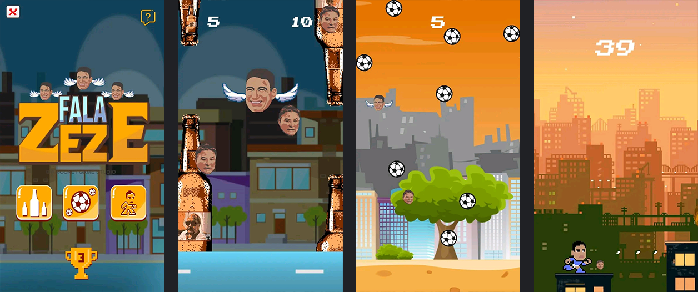

Mockup Rocket Impressão Gráfica, com cartão de visita, flag's e logo
Ferramentas:
Adobe Photoshop
Bilheteria Celeste
Mockup Bilheteria Celeste com papel de parede, id visual e parada de ônibus
Ferramentas:
Adobe Photoshop
Fala Zeze

Gameplay Fala Zeze
Sobre:
Um jogo casual baseado no meme do futebol "Fala, Zezé, Bom dia, cara". Inspirado no famoso Flappy Bird, o objetivo é passar pelos obstaculos que são garrafas de cerveja e coletar moedas chamadas de Zezé Coins. No jogo você controla o personagem Thiago Bird, uma paródia do jogador Thiago Neves. Acumule o máximo de Zezé Coins e bata o recorde dos seus amigos. O jogo tem mais de 5 mil downloads e está disponível no Google Play Store clicando aqui O jogo viralizou nas redes sociais e fui entrevistado pelo Jornal Hoje em Dia, que falou um pouco sobre o jogo aqui"
4Feitos é uma coletânea de mini games que se dividem em quatro feitos, grandes ou pequenos, que se estendem pelo passado, presente e futuro. O jogador irá do surgimento da
pangeia até a importância da reciclagem nos dias de hoje.
O intuito do jogo é ensinar os jogadores sobre a importância de como o nosso planeta e a nossa história se tornou o que é hoje e o que
podemos fazer para melhorar ela no futuro.
Cada um dos mini game possuirá
uma pontuação que o jogador poderá ver durante e ao final de cada jogo e
também poderá tentar superá-la, criando uma nova pontuação máxima ou até
mesmo disputar com amigos para ver quem consegue a maior pontuação em cada.
Desvie dos obstáculos mantendo o balão der quente flutuando e some o máximo de pontos
Monte o quebra-cabeça e forme o mapa da pangeia
Recicle os residuos colocando-os na lixeira correta
Repita o grande feitos de Neil Armstrong's anulissando o módulo eagle do Apollo 11.
Ferramentas:
Unity Engine 2019
Beepbox
Adobe photoshop
Visual Studio Code
Desenvolvedores:
Anderson Alvarenga - Programador e designer gráfico
Juan Aliaga - Audio Designer e programador
Bruce Dickinson - Level Designer e roteirista
Cephas Kyrbb - Artista 2D
Projetado para jogar em desktop
Lançamento: Dezembro de 2019
Penguin Runner
Penguin Runner é um protótipo de jogo infinity runner. Salte sobre obstáculos e colete o máximo de pontos possível. Jogo feito para estudo.
Desenvolvido em Unity Engine 5
Projetado para jogar em desktop.
Agosto de 2019
TeimoSô
Sobre:
Um trocadilho da palavra teimoso e a expressão “sô” popular no interio de cidades brasileiras.
TeimoSô é um jogo de ação e aventura em plataforma 2D, cujo objetivo é sempre pegar o cristal mágico, evitar e derrotar o chefe no final de cada nível..
Desenvolvedores:
Anderson Alvarenga - Programador
Juan Aliaga - Programador
Bruce Dickinson - Level Designer e roteirista
Cephas Kyrbb - Artista 2D
Ferramentas:
Unity Engine 2019
Visual Studio Code
Paint Tool Sai
Em construção
About
Meu nome é Anderson Alvarenga, sou estudante de jogos digitais na Universidade Cruzeiro do Sul. Estou buscando especialização no desenvolvimento de jogos e de aplicativos mobile. Desenvolvo jogos na Unity Engine, tenho conhecimento básico na linguagem C#. Também estou cursando desenvolvimento de aplicativos mobile no framework Flutter e tenho conhecimento básico na linguagem Dart.
Aplicativo para calcular o preço do álcool e da gasolina mostrando qual o mais vantajoso utilizar conforme o preço.
O aplicativo é um protótipo feito no curso Balta.io